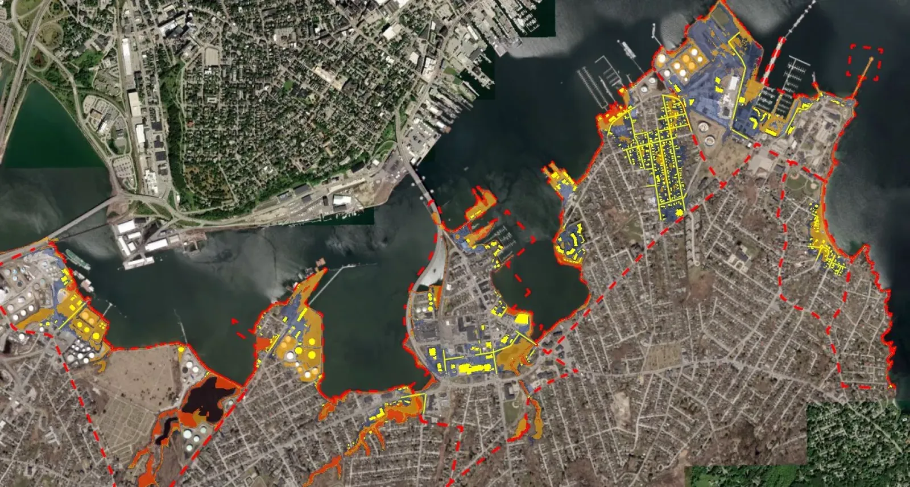

The Comprehensive Plan for South Portland is mandated to be updated every 12 years

The Comprehensive Plan forms the “foundation for community actions, policies and regulations.” Come to a meeting in person or watch via livestream, and tell the committee what the city’s goals should be.
After the January 13th storm surge and flooding, PSP and the community advocated for the Comprehensive Plan Committee to move its climate goals from the last of five goals to the number one goal for future planning and development. Placing climate resilience as the number one goal is a first in South Portland history. We are grateful to have such responsive Comprehensive Plan Committee members.
THE COMPREHENSIVE PLAN COMMITTEE MADE CLIMATE READINESS THE CITY’S #1 GOAL:
1. Ecology and Climate Readiness. South Portland will collectively take responsibility for preserving and protecting its natural places and preparing for the impacts of climate change. Goals include:
- Plan for sea level rise & coastal storms: at least 1.5 – 3 feet of sea level rise by 2050 and 3.8 – 8.7 feet by 2100 and increased risks from storms.
- Become climate resilient against extreme weather: adapt codes, ordinances, policies, and services to prepare for the impacts of climate change.
- Protect & enhance the natural environment: protect South Portland’s coastline, green spaces, and natural habitat.
We encourage citizens to work with the Comprehensive Plan Committee to support the climate goals as the details of the plan are created. Visit SouthPortland2040.com to catch up on progress of the plan and to learn how you can participate. Email or call your city council members. You can help shape the future of South Portland.
Local concern arose over health and safety at the proposed Yard South development
Yard South was a large-scale residential development proposed next to scenic Bug Light Park. As described in a site walk at the time, Yard South, in phase one, planned to build three or four 18-story towers with 1200 or more residential units. The developers claimed there would be 8–10% affordable housing units provided. The owner filed the contract-zone and zoning amendments on July 31, 2024; the applicant withdrew the application effective Nov. 4, 2024, and the City’s record states no further processing of it will occur.
For the following reasons, PSP raised grave health and safety concerns about this proposed zone change:
- D.E.P. Emissions Permits for the adjacent Gulf and Portland Pipeline terminals combined allow:
- 100+ tons of airborne Volatile Organic Compounds per year
- DEP monitoring has documented some of the city’s highest levels of petroleum-associated cancer-causing benzene and other health-damaging chemicals in this area
- 30+ tons of airborne hazardous air pollutants per year
- The proximity of bulk petroleum storage facilities to existing residential, community college, and other land uses is already a serious safety and evacuation concern for a catastrophic fire/explosion/petroleum spill event.
- This area is a contaminated brownfield.
- The 2020 Maine Climate Council Scientific and Technical Committee Report suggests preparing for 8.8 feet of sea level rise by 2100. Tank farms pose a threat from flooding with sea level rise and storm surges as well as extreme weather conditions. The future public expense to maintain this area as dry land or to mitigate future flooding is likely to be considerable. There is also concern that buried toxins will leach into flood waters and be released into Casco Bay. Meanwhile existing neighborhoods and all So. Portland tank farms will need protection from heightened water levels.
Because of these concerns, before any zoning change, Protect South Portland was and remains a strong advocate for:
- Tank emission mitigation
- Sea level remediation
- Publicly informed clear emergency evacuation plan
At the time, PSP encouraged residents to raise questions and concerns with the councilors then serving (contact list current as of 2024):
- Misha Pride: mpride@southportland.org | (207) 749-7817
- Linda Cohen: lcohen@southportland.org | (207) 831-9574
- Rachael Coleman: rcoleman@southportland.org | (207) 272-0762
- Steven Riley: sriley@southportland.org | (207) 831-4154
- Elyse Tipton: etipton@southportland.org | (207) 632-8983
- Richard Matthews: rmatthews@southportland.org | (207) 216-7543
- Natalie West: nwest@southportland.org
Today, Act now carries the current email-the-Council flow and Get involved lists today’s contacts.
If you are interested in having your voice heard in-person, public comment on any subject is allowed for up to 3 minutes at all City Council meetings. Click here to find the schedules and agendas for City Council and Comprehensive Plan meetings.
Yard South raises a range of other issues, including greatly increased traffic and the widening of Broadway. For more information at the time, residents could call or email Cathy Chapman.
Read the full Yard South archive: Yard South Proposal page.
The ordinance campaigns
Three of PSP’s ordinance campaigns are archived on their own pages — each won a lasting protection for South Portland’s air, soil and bay:
- Clear Skies — the 2014 ordinance banning the loading of crude (especially tar sands crude) onto tankers in the harbor, upheld through eight years of litigation.
- Fertilizer Ban — the synthetic-fertilizer ordinance passed in November 2020, protecting Casco Bay from nitrogen runoff.
- Pesticides — the Bees, Bays and Backyards ordinance education program behind South Portland’s pesticide rules.
Clear Skies
Clean air over South Portland, eight years after the ordinance stood up to Big Oil.
READ THE ARCHIVE →